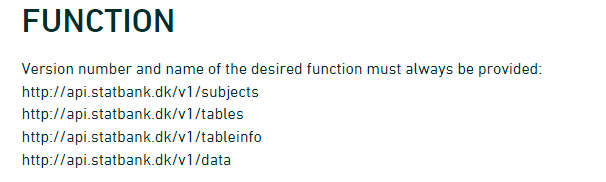

Using POST
Last updated on 2026-04-28 | Edit this page
Overview
Questions
- How do I get data from an API using the POST method?
Objectives
- Connect to Statistics Denmark, and extract data
- Create a list of lists to control the variables to be extracted
Please note: These pages are autogenerated. Some of the API-calls may fail during that process. We are figuring out what to do about it, but please excuse us for any red errors on the pages for the time being.
Getting data from Statistics Denmark
The API from statistics Denmark can accept GET requests. But they recommend using POST instead. That allows us to do more advanced searches for data easier.
We are going to write a POST-request (with a little help from R), to retrieve data from Statistics Denmark.
But before we can do that, we need to know how the Statistics Denmark API expects to receive data.
Hopefully we can get that by reading the documentation, that can be found here.
But that is rather confusing.
The main points:
First: Statistics Denmark provides four “functions”, or endpoints. This is equivalent to the URL we requested data from using the GET method.

- The first is the “web”-site we have to send requests to if we want information on the subjects in Statistics Denmark.
- In the second we get information about which tables are available for a given subject.
- The third will provide metadata on a table.
- When we finally need the data, we will visit the last endpoint.
Secondly: We need to provide a body containing search parameters in a format like this:
R
{
"table": "folk1c"
}
Let us look at how to do this, by sending a request to
subjects.
The endpoint was
R
endpoint <- "http://api.statbank.dk/v1/subjects"
We will now need to construct a named list for the content of the body that we send along with our request.
This is a new datastructure that we have not encountered before.
Vectors are annoying because they can only contain one datatype. And dataframes must be rectangular.
A list allows us to store basically anything. The reason that we do not use them for everything is that they are a bit more difficult to work with.
R
our_body <- list(lang = "en", recursive = FALSE,
includeTables = FALSE, subjects = NULL)
This list contains four elements, with names. - The first,
lang, contains a character vector (length 1), containing
“en”, the language that we want Statistics Denmark to use when returning
data. - recursive and includeTables are
logical values, both false. - subjects is a special value,
NULL. This is not a missing value, there simply isn’t anything there.
But this nothing does have a name.
lists
Lists are subset in a special way. If we want the first element in
our_body, we can use the usual bracket notation:
R
our_body[1]
OUTPUT
$lang
[1] "en"If we want the actual value of element 1, we use a double bracket notation:
R
our_body[[1]]
OUTPUT
[1] "en"Now we have the two things we need, an endpoint to send a request, and a body containing what we want returned.
Let us try it:
R
result <- httr::POST(endpoint, body=our_body, encode = "json")
ERROR
Error in `curl::curl_fetch_memory()` at httr/R/write-function.R:78:3:
! Timeout was reached [api.statbank.dk]:
Connection timeout after 10001 msWe specify that the request should be encoded as “json”.
Let us look at the result:
R
result
ERROR
Error:
! object 'result' not foundBoth informative. And utterly useless. The informative information is that our request succeeded (cave - it might not succeed on this webpage). We can see that in the status. 200 is an internet code for success.
Let us get the content of the result, which is what we actually want:
R
result |>
content()
ERROR
Error:
! object 'result' not foundMore informative, but not really easy to read.
The library jsonlite has a function that converts this
to something readable:
R
result |>
content() |>
fromJSON()
ERROR
Error:
! object 'result' not foundA nice dataframe with the ten major subjects in the databases of Statistics Denmark.
Subject 1 contains information about populations and elections.
There are sub-subjects under that. We can see that in the column
hasSubjects
We now modify our body that we send with the request, to return information about the first subject.
We need to make sure that the number of the subject, 1
is intepreted as it is. This is a little bit of mysterious handwaving -
we simply put the 1 inside the function I() and stuff
works.
R
our_body <- list(lang = "en", recursive = F,
includeTables = F, subjects = I(1))
I()
I() isolates - or insulates - the contents of
I() from the gaze of R’s parsing code. Basically it
prevents R from doing stuff to the content that we dont want it to. In
this specific case, the POST() function would convert the
vector 1, with length 1, to a scalar, the more basic data type in R,
that hold only one, single, atomic value at a time.
Note that it is important that we tell the POST()
function that the body is the body:
R
data <- POST(endpoint, body=our_body, encode = "json") |>
content() |>
fromJSON()
data
OUTPUT
id description active hasSubjects
1 1 People TRUE TRUE
subjects
1 3401, 3407, 3410, 3415, 3412, 3411, 3428, 3409, Population, Households and family matters , Migration, Housing, Health, Democracy, National church, Names, TRUE, TRUE, TRUE, TRUE, TRUE, TRUE, TRUE, TRUE, TRUE, TRUE, TRUE, TRUE, TRUE, TRUE, TRUE, TRUENot that easy to see in this format, but the data frame contains a
data frame. That is, in the column subjects the content is
a data frame.
We pick that out using the $-notation:
R
data$subjects
OUTPUT
[[1]]
id description active hasSubjects subjects
1 3401 Population TRUE TRUE NULL
2 3407 Households and family matters TRUE TRUE NULL
3 3410 Migration TRUE TRUE NULL
4 3415 Housing TRUE TRUE NULL
5 3412 Health TRUE TRUE NULL
6 3411 Democracy TRUE TRUE NULL
7 3428 National church TRUE TRUE NULL
8 3409 Names TRUE TRUE NULLThese are the sub-subjects of subject 1.
Let us look closer at 3401, Population.
Again, we modify the call we send to the endpoint:
R
our_body <- list(lang = "en", recursive = F,
includeTables = F, subjects = I(3401))
R
data <- POST(endpoint, body=our_body, encode = "json") |>
content() |>
fromJSON()
ERROR
Error in `curl::curl_fetch_memory()` at httr/R/write-function.R:78:3:
! Failure when receiving data from the peer [api.statbank.dk]:
OpenSSL SSL_read: Connection reset by peer, errno 104R
data
OUTPUT
id description active hasSubjects
1 1 People TRUE TRUE
subjects
1 3401, 3407, 3410, 3415, 3412, 3411, 3428, 3409, Population, Households and family matters , Migration, Housing, Health, Democracy, National church, Names, TRUE, TRUE, TRUE, TRUE, TRUE, TRUE, TRUE, TRUE, TRUE, TRUE, TRUE, TRUE, TRUE, TRUE, TRUE, TRUEWe delve deeper into it:
R
data$subjects
OUTPUT
[[1]]
id description active hasSubjects subjects
1 3401 Population TRUE TRUE NULL
2 3407 Households and family matters TRUE TRUE NULL
3 3410 Migration TRUE TRUE NULL
4 3415 Housing TRUE TRUE NULL
5 3412 Health TRUE TRUE NULL
6 3411 Democracy TRUE TRUE NULL
7 3428 National church TRUE TRUE NULL
8 3409 Names TRUE TRUE NULLAnd now we are at the bottom. 20021 Population figures does not have any sub-sub-subjects.
Next, let us take a look at the tables contained under subject 20021.
We need the next endpoint, which provides information about tables under a subject:
R
endpoint <- "http://api.statbank.dk/v1/tables"
R
our_body <- list(lang = "en", subjects = I(20021))
data <- POST(endpoint, body=our_body, encode = "json") |>
content() |>
fromJSON()
ERROR
Error in `curl::curl_fetch_memory()` at httr/R/write-function.R:78:3:
! Timeout was reached [api.statbank.dk]:
Connection timeout after 10002 msR
data |> head()
OUTPUT
id description active hasSubjects
1 1 People TRUE TRUE
subjects
1 3401, 3407, 3410, 3415, 3412, 3411, 3428, 3409, Population, Households and family matters , Migration, Housing, Health, Democracy, National church, Names, TRUE, TRUE, TRUE, TRUE, TRUE, TRUE, TRUE, TRUE, TRUE, TRUE, TRUE, TRUE, TRUE, TRUE, TRUE, TRUEThere are 21 tables under this subject. Let us see what information we can get about table “FOLK1A”:
We now need the third endpoint:
R
endpoint <- "http://api.statbank.dk/v1/tableinfo"
R
our_body <- list(lang = "en", table = "FOLK1A")
data <- POST(endpoint, body=our_body, encode = "json") |>
content() |>
fromJSON()
ERROR
Error in `curl::curl_fetch_memory()` at httr/R/write-function.R:78:3:
! Timeout was reached [api.statbank.dk]:
Connection timeout after 10002 msR
data
OUTPUT
id description active hasSubjects
1 1 People TRUE TRUE
subjects
1 3401, 3407, 3410, 3415, 3412, 3411, 3428, 3409, Population, Households and family matters , Migration, Housing, Health, Democracy, National church, Names, TRUE, TRUE, TRUE, TRUE, TRUE, TRUE, TRUE, TRUE, TRUE, TRUE, TRUE, TRUE, TRUE, TRUE, TRUE, TRUEThis is a bit more complicated. We are told that:
- there are five columns in this table.
- They each have an id
- And a descriptive text
- Elimination means that the API will attempt to eliminate the variables we have not chosen alues for when data is returned. This makes sense when we get to point 7.
- time - only one of the variables contain information about a point in time.
- One of the variables can be mapped to - well a map
- The final column provides information about which values are stored in the variable. There are 105 different regions in Denmark. And if we do not choose a specific region - the API will attempt to eliminate this facetting, and return data for all of Denmark.
These data provides useful information for constructing the final call to the API in order to get the data.
We will now need the final endpoint:
R
endpoint <- "http://api.statbank.dk/v1/data"
And we will need to specify which information, from which table, we want data in the body of the request. That is a bit more complicated. We need to make a list of lists!
We start by placing the individual lists within a list, and save that
to an object - variables:
R
variables <- list(list(code = "OMRÅDE", values = I("*")),
list(code = "CIVILSTAND", values = I(c("U", "G", "E", "F"))),
list(code = "Tid", values = I("*"))
)
We can then embed that list into a new list, containing the entire body:
R
our_body <- list(table = "FOLK1A", lang = "en", format = "CSV", variables = variables)
The final call boils down to:
R
data <- POST(endpoint, body=our_body, encode = "json")
ERROR
Error in `curl::curl_fetch_memory()` at httr/R/write-function.R:78:3:
! Failure when receiving data from the peer [api.statbank.dk]:
OpenSSL SSL_read: Connection reset by peer, errno 104The data is returned as csv - we defined that in “our_body”, so we now need to extract it a bit differently:
R
data <- data |>
content(type = "text") |>
read_csv2()
ERROR
Error in `content()` at readr/R/read_delim.R:415:3:
! is.response(x) is not TRUER
data
OUTPUT
id description active hasSubjects
1 1 People TRUE TRUE
subjects
1 3401, 3407, 3410, 3415, 3412, 3411, 3428, 3409, Population, Households and family matters , Migration, Housing, Health, Democracy, National church, Names, TRUE, TRUE, TRUE, TRUE, TRUE, TRUE, TRUE, TRUE, TRUE, TRUE, TRUE, TRUE, TRUE, TRUE, TRUE, TRUEVoila! We have a dataframe with information about how many persons in Denmark were married (or not) at different points in time.
That was a bit complicated. There are easier ways to do it.
We will look at that shortly. So why do it this way? These techniques are the same techniques we use when we access an arbitrary other API. The fields, endpoints etc might be different. We might have an added complication of having to login to it. But the techniques can be reused.
If we want, we can save the data:
R
write_csv2(data, "/data/SD_data.csv")
Remember to make a data folder before trying to save
data in it.
- POST requests to servers put specific demands on how we request data
- Using an API requires us to understand (some of) the ways the API works
- Different searches typically requires different endpoints